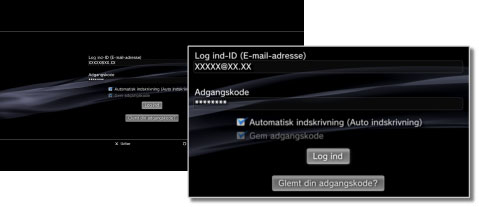

PlayStation®Network > Gem adgangskode/Automatisk log ind
Gem adgangskode/Automatisk log ind
Brug af denne funktion kræver muligvis en opdatering af din System Software.
Hvis du gemmer din adgangskode, vil den være oplyst på login-skærmen. Hvis du også indstiller den til at logge ind automatisk, logger PS3™-systemet automatisk på PlayStation®Network, når du tænder det.
Vigtigt
- Hvis du gemmer din adgangskode, kan andre brugere få mulighed for at bruge PlayStation®Network-tjenester eller se andre oplysninger vedr. din konto.
- Sørg for at nulstille indstillingen under PlayStation®Network [Gem adgangskode] for alle brugere, før du sender dit PS3™-system til reparation. På denne måde undgås uautoriseret adgang til eller brug af dit kreditkort eller andre personoplysninger.
- Sørg for at slette alle data og gendanne standardindstillingerne på dit PS3™-system, før du overdrager dit PS3™-system til en tredjepart, herunder hvis systemet returneres (hvor tilladt). På denne måde undgås uautoriseret adgang til eller brug af dit kreditkort eller andre personoplysninger.
1. |
Vælg |
|---|---|
2. |
Angiv dit log ind-ID (e-mail-adresse) og din adgangskode. |
3. |
Vælg afkrydsningsboksene [Gem adgangskode] og [Automatisk indskrivning (Auto indskrivning)].  |
Tip
Hvis [Automatisk indskrivnig (Auto LogIn)] er markeret, vises ikonet for (Log Ind) ikke længere.
Fjern auto-login-indstillingen
Vælg  (Kontohåndtering) under
(Kontohåndtering) under  (PlayStation®Network) og vælg derefter [Auto Log ind Slukket] indstillingsmenuen. Når du tænder for dit PS3™-system, vil det ikke længere logge på automatisk.
(PlayStation®Network) og vælg derefter [Auto Log ind Slukket] indstillingsmenuen. Når du tænder for dit PS3™-system, vil det ikke længere logge på automatisk.
Fjern indstillingen gem adgangskode (sletter adgangskoden)
1. |
Vælg (Log ind) under |
|---|---|
2. |
Indtast Log ind-id og adgangskode på skærmen, og fjern markeringen af afkrydsningsfeltet [Gem adgangskode]. |
Tips
- Hvis du har valgt automatisk log-in, vises (Log ind) ikke. I dette tilfælde skal du først nulstille indstillingen til automatisk log-in.
- Hvis du nulstiller indstillingen til automatisk log-in, logges du alligevel ind automatisk, hvis netværksforbindelsen afbrydes midlertidigt, mens du var logget ind.